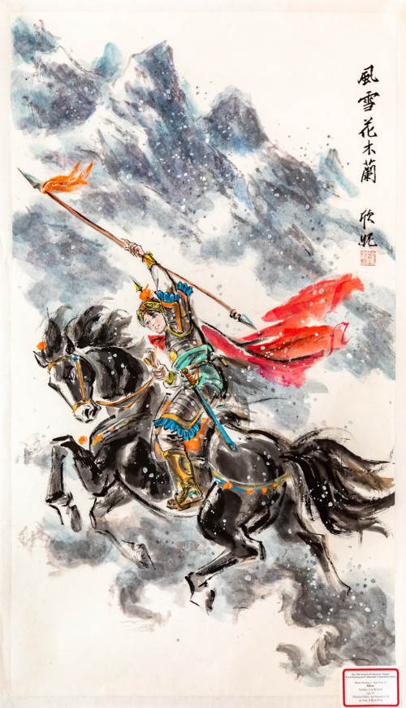
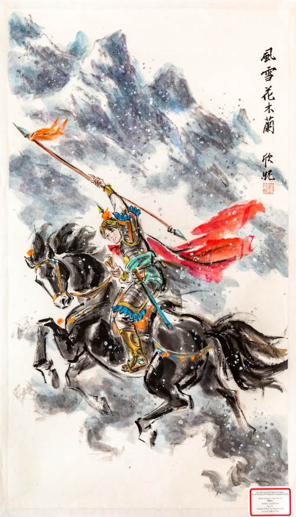
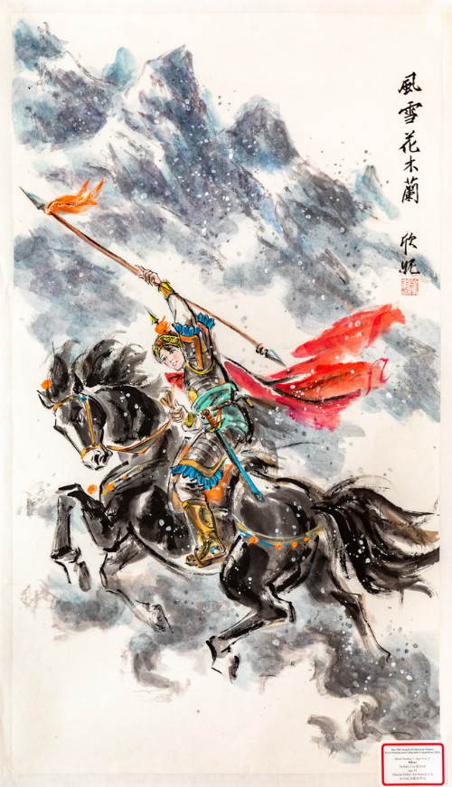

Sydney Liu
Currently, I am an art student at UCR that aspires to be a UI designer for apps. I have experience mentoring underclassmen and was a reliable resource for student life assistance. In my high school, I served as the President of Technical Theater Club, Key Club Publicist, and UNICEF Board Member. During my time in these roles, I was able to polish my leadership experience by exposing myself to different communities. My problem solving and quick thinking were constantly tested and are therefore some of my strong qualities.
From June 2022 to September 2022, I worked as a 7 Leaves team member. As a team member, my responsibilities included creating fresh drinks customers, handling money at the register, and communicating with customers in need. During a high pressure setting, team members are expected to work together efficiently to make drinks in a timely manner. From this teamwork, we were able to make over 100 drinks in an hour. The location of my 7 Leaves was in a very diverse area. Therefore my ability to speak Mandarin, Chinese was incredibly beneficial when at the cash register. While being a Key Club Publicist. I spent my time designing posters, flyers and making promotional media regarding the club. I have designed over 15 posters and have taken over 50 photos and videos to promote the club on our school websites and social media.
While transitioning to college, I found myself having trouble adjusting to a new lifestyle in a new city. However, the resources and people here at UCR allowed me to maintain discipline and engage with the surrounding community. During my first quarter, I spent most of my time attending community events in the resident halls such as tote-bag decorating and silent disco night to introduce myself to a new environment. As the academic year continued, I joined UCR’s design club to explore a possible career in User Experience design, and the Residents Hall Student Association (RHA) for the Pentland Hills residence halls. By joining these groups, I was able to find the value in having a community of people around me to spend my days with.
Experience
Team Member
• Efficiently made drinks in a high pressure environment
• Experienced with multilingual communication with customers
• Ability to use POS while producing drinks in a timely manner
Honorary Eagle Mentor
• Served as a mentor for 30 incoming high school freshmen
• Responsible for planning orientation, weekly meetings, and held game nights
• Fostered a welcoming environment for incoming students
President
• Co-led 8 students and taught set design, light design, and stage management
• Stage Manager for Talent Show, Mabuhay Club Dance Show, and The Lightning Thief: Percy Jackson Musical; responsible for leading sound and lighting designers, directed cues during musicals, plays, and talent shows
• Ability to remain calm and reliable under pressure while working shows
Education
UC Riverside
Portfolio
 



